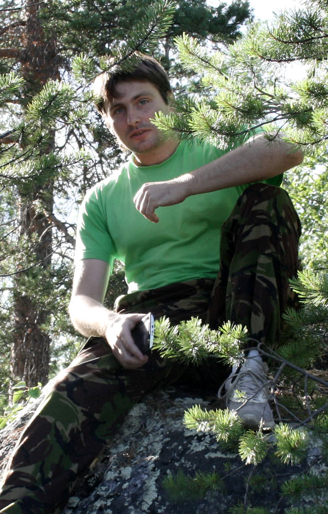

Денис Ширшов
aka prozion
Программирование и разработка
-
Массовая фильтрация статей PubMed
2021
разработка
Racket, XPath, WikiMedia API, Medline
-
Разработка утилит для работы с группами объявлений ВКонтакте
2013 – настоящее время
Racket, Tabtree
-
Транслятор SBGN диаграмм
2017, 2018
разработка
Racket, SBGN-ED, Newt
-
ISBC
2013-2014
разработка in-house ERP
PHP, MySQL, JQuery, AngularJS
-
Сайт районной газеты Печенга
2008
идея, разработка
Java, JSTL, JSP, Tomcat, MySQL
-
Unique ICs
2005-2006
участие в разработке системы проектирования AvoCAD, тестирование моделей транзисторов
C++, XML/XSLT
Инфографика и визуализация данных
-
Интерактивная визуализация советских фильмов
2016
Javascript
-
Редизайн районной газеты Печенга
2015
Adobe InDesign, Adobe Photoshop, Adobe Illustrator
-
Карты программ проекта Dark Ecology
2014, 2015, 2016
графика
Adobe Illustrator
-
Карта Никеля на норвежском языке 2.0
2014
идея, обновление данных, графика, препринт
Adobe Illustrator, Clojure
-
Карта Никеля и Заполярного на норвежском языке
2012
идея, сбор данных, графика, препринт
Adobe Illustrator, SVG, Newlisp
-
Портфолио инфографических работ
2012-2016
Приграничные исследования
-
Никипедия – вики Никеля
2015
идея, настройка, наполнение
MediaWiki CMS
-
Сайт BorderZone
2009
сбор данных, перевод
CustomPublish CMS
-
Исследование приграничных городов PEZANIKI
2007
партнер со стороны России